---
title: "Линейные модели с дискретными предикторами"
subtitle: "Дисперсионный анализ"
author: "Марина Варфоломеева, Вадим Хайтов, Анастасия Лянгузова"
institute: "Кафедра Зоологии беспозвоночных, СПбГУ"
date: today
format:
revealjs:
width: 1600
height: 1080
code-block-height: 700px
embed-resources: true
self-contained-math: true
slide-number: true
code-line-numbers: true
incremental: false
title-slide-attributes:
data-background-color: "#7ea9b9"
data-state: "inverse"
df-print: default
logo: assets/Linmod_logo.gif
theme: default
css:
- assets/my_styles_2026.css
execute:
cache: false
---Презентация: Линейные модели с дискретными предикторами (ANOVA)
Ниже — переработанная презентация из .Rmd (xaringan) в .qmd (Quarto revealjs), с использованием стилей второго файла (format: revealjs, embed-resources, self-contained-math, code-line-numbers, кастомный CSS и т.д.).
---
## Цели занятия {.center .middle .inverse}
- Объяснить, в чём опасность множественных сравнений, и как с ними можно бороться
- Рассказать, как в дисперсионном анализе моделируются значения зависимой переменной
- Интерпретировать и описать результаты, записанные в таблице дисперсионного анализа
- Перечислить и проверить условия применимости дисперсионного анализа
- Провести множественные попарные сравнения при помощи post hoc теста Тьюки, представить и описать их результаты
- Построить график результатов дисперсионного анализа
---
## Дисперсионный анализ (Analysis Of Variance, ANOVA)
**Дисперсионный анализ в широком смысле** — анализ изменений непрерывной зависимой переменной в связи с разными источниками изменчивости (предикторами).
Мы использовали его для тестирования значимости предикторов в линейных моделях.
**Дисперсионный анализ в узком смысле** — это частный случай, когда в линейной модели используются только дискретные предикторы (факторы).
Он используется для сравнения средних значений зависимой переменной в дискретных группах, заданных факторами.
---
## Пример: яйца кукушек
Различаются ли размеры яиц кукушек в гнёздах разных птиц-хозяев?
Датасет `cuckoos` из пакета `DAAG`:
- `species` — вид птиц-хозяев (фактор);
- `length` — длина яиц кукушек в гнёздах хозяев (зависимая переменная).
<small>Данные: Latter, 1902; источник: Tippett, 1931</small>
---
## Открываем данные
::: {.cell layout-align="center"}
```{.r .cell-code}
library(DAAG)
data("cuckoos")
eggs <- cuckoos
head(eggs, 3) length breadth species id
1 21.7 16.1 meadow.pipit 21
2 22.6 17.0 meadow.pipit 22
3 20.9 16.2 meadow.pipit 23colnames(eggs) <- c("len", "br", "sp", "id"):::
Изменим названия уровней фактора
levels(eggs$sp)[1] "hedge.sparrow" "meadow.pipit" "pied.wagtail" "robin"
[5] "tree.pipit" "wren" levels(eggs$sp) <- c("ЛесЗав", "ЛугКон", "БелТряс",
"Малин", "ЛесКон", "Крапив")Исследуем данные
# Пропущенных значений нет
colSums(is.na(eggs))len br sp id
0 0 0 0 # Данные не сбалансированы (размеры групп разные)
table(eggs$sp)
ЛесЗав ЛугКон БелТряс Малин ЛесКон Крапив
14 45 15 16 15 15 Задание 1
Дополните код, чтобы построить график зависимости размера яиц кукушек (len) от вида птиц-хозяев (sp), в гнёздах которых были обнаружены яйца. На графике должны быть изображены средние значения и их 95% доверительные интервалы, а цвет должен соответствовать виду птиц-хозяев.
library()
theme_set( )
ggplot(data = , aes()) +
stat_summary(geom = , fun.data = )Решение 1
library(ggplot2)
theme_set(theme_bw())
ggplot(data = eggs, aes(x = sp, y = len, colour = sp)) +
stat_summary(geom = "pointrange", fun.data = mean_cl_normal)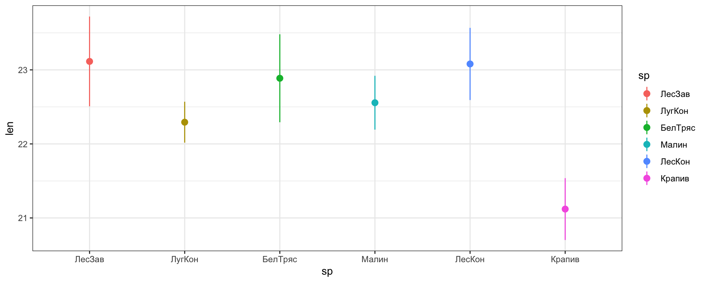
«Некрасивый» порядок уровней на графике
На этом графике некрасивый порядок уровней: средние для разных уровней фактора eggs$sp расположены, как кажется, хаотично.
Порядок групп на графике определяется порядком уровней фактора.
levels(eggs$sp)[1] "ЛесЗав" "ЛугКон" "БелТряс" "Малин" "ЛесКон" "Крапив" Меняем порядок уровней
Давайте изменим порядок уровней в факторе eggs$sp так, чтобы он соответствовал возрастанию средних значений длины яиц eggs$len.
levels(eggs$sp)[1] "ЛесЗав" "ЛугКон" "БелТряс" "Малин" "ЛесКон" "Крапив" eggs$sp <- reorder(eggs$sp, eggs$len, FUN = mean)
levels(eggs$sp)[1] "Крапив" "ЛугКон" "Малин" "БелТряс" "ЛесКон" "ЛесЗав" График с новым порядком уровней
С новым порядком уровней нам легче визуально сравнивать друг с другом категории.
Поскольку, изменив порядок уровней, мы внесли изменения в исходные данные, придётся полностью обновить график (т.к. ggplot() хранит данные внутри графика).
ggplot(data = eggs, aes(x = sp, y = len, colour = sp)) +
stat_summary(geom = "pointrange", fun.data = mean_cl_normal)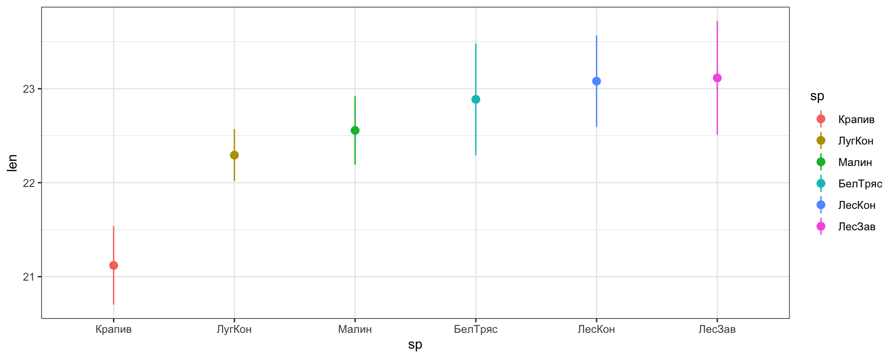
Понравившийся график
gg_means <- ggplot(data = eggs, aes(x = sp, y = len, colour = sp)) +
stat_summary(geom = "pointrange", fun.data = mean_cl_normal, size = 1) +
labs(x = "Вид хозяев", y = "Длина яиц кукушек, мм") +
scale_colour_brewer(name = "Вид \nхозяев", palette = "Dark2") +
theme(legend.position = "none")
gg_means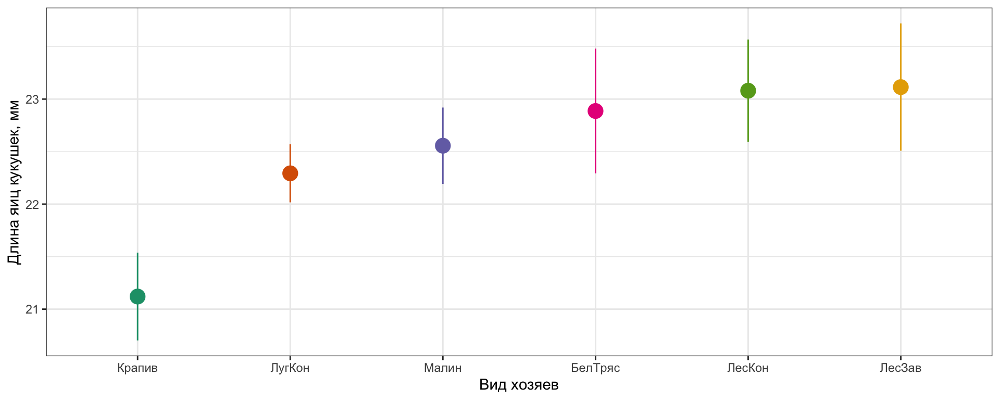
Множественные сравнения
Множественные сравнения
Мы могли бы сравнить длину яиц в гнёздах разных хозяев при помощи t-критерия.
У нас всего 6 групп. Сколько возможно между ними попарных сравнений?
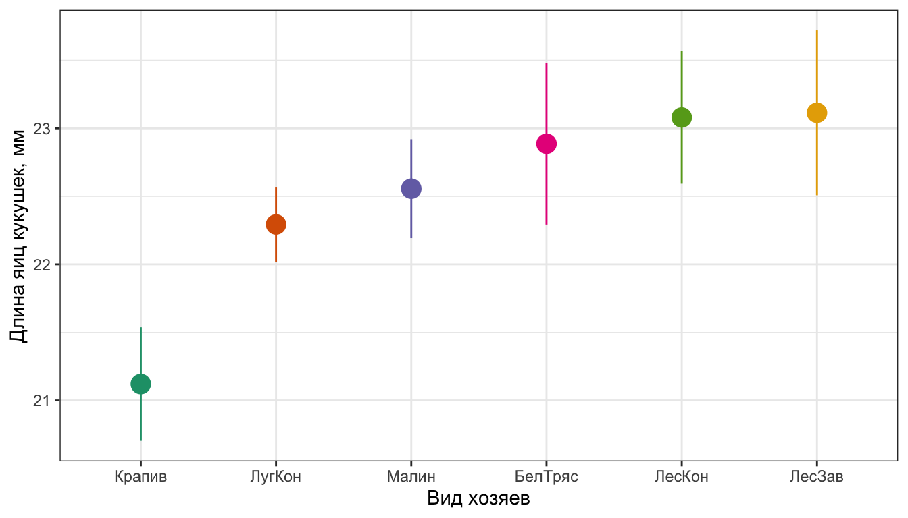
Всего возможно 15 сравнений.
Если для каждого сравнения вероятность ошибки первого рода будет \(\alpha_{per\ comparison} = 0.05\), то для группы из 15 сравнений — ?
Если предположить, что сравнения независимы (это не так), то \(\alpha_{family\ wise} = 1 - (1 - 0.05)^{15} = 0.54\). Мы рискуем найти различия там, где их нет с 54% вероятностью!
Для зависимых сравнений вероятность будет немного меньше, но всё равно значительно больше \(0.05\).
Поправка Бонферрони — очень жёсткий способ коррекции
Если нужно много сравнений, можно снизить \(\alpha_{per\ comparison}\) до общепринятого уровня
\[\alpha_{per\ comparison} = \frac{\alpha_{family\ wise}}{n}\]
Например, если хотим зафиксировать \(\alpha_{family\ wise} = 0.05\)
С поправкой Бонферрони \(\alpha_{per\ comparison} = 0.05 / 15 = 0.003\)
Это очень жёсткая поправка! Мы рискуем не найти достоверных различий, даже там, где они есть…
Но есть выход. Вместо множества попарных сравнений можно использовать один тест — дисперсионный анализ (analysis of variation, ANOVA).
Дисперсионный анализ
Общая изменчивость
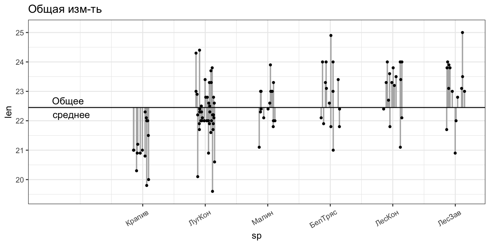
Общая изменчивость \(SS_t\) — это сумма квадратов отклонений наблюдаемых значений \(y_i\) от общего среднего \(\bar y\)
Отклонения от общего среднего
Межгрупповые отклонения — отклонения внутригрупповых средних от общего среднего («эффекты» групп) — факторная изменчивость.
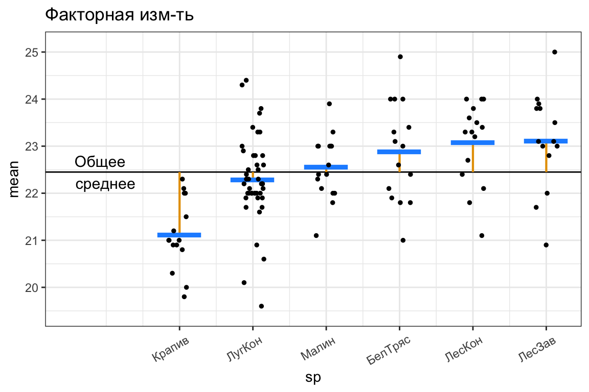
Внутригрупповые отклонения — отклонения наблюдаемых значений от внутригрупповых средних — случайная изменчивость.
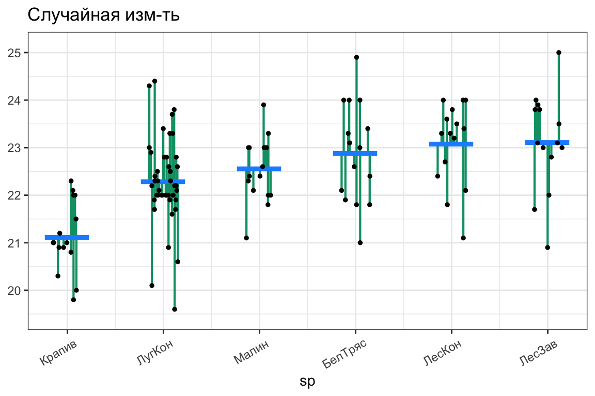
Отклонения внутригрупповых средних от общего среднего в генеральной совокупности — это эффект фактора \(\alpha_j = \mu_j - \mu\), где \(j = 1, 2, ..., p\) — это одна из \(p\) групп.
Структура общей изменчивости
\[SS_t = SS_x + SS_e\]
Общая изменчивость
\(SS_{t}= \sum\sum{(\bar{y}-y_{ij})^2}\)
\(df_{t} = n - 1\)
Факторная изменчивость
\(SS_{x}=\sum{n_j(\bar{y}_j-\bar{y})^2}\)
\(df_{x} = p - 1\)
Остаточная изменчивость
\(SS_{e}= \sum\sum{(\bar{y}_{j}-y_{ij})^2}\)
\(df_{e} = n - p\)
От изменчивостей к дисперсиям
\[SS_t = SS_x + SS_e \qquad MS_t \ne MS_x + MS_e\]
| Общая дисперсия | Факторная дисперсия | Остаточная дисперсия |
|---|---|---|
| \(MS_{t} = \frac{SS_{t}}{df_{t}}\) | \(MS_{x} = \frac{SS_{x}}{df_{x}}\) | \(MS_{e} = \frac{SS_{e}}{df_{e}}\) |
Они не зависят от числа наблюдений в выборке, в отличие от \(SS_x\) и \(SS_e\). С их помощью можно проверить гипотезу о наличии связи между предиктором и откликом.
\(MS_x\) и \(MS_e\) помогают тестировать значимость фактора
Если дисперсии остатков в группах равны и фактор имеет фиксированное число градаций:
\[E(MS_x) = \sigma^2 + \sum n_i \frac{(\mu_i - \mu)^2}{p - 1} = \sigma^2 + \sigma^2_x\]
\[E(MS_e) = \sigma^2\]
Если зависимости нет, то \(\mu_1 = \ldots = \mu_p\) — средние равны во всех \(p\) группах, и тогда \(MS_x \sim MS_e\).
- \(H_0: \mu_1 = \ldots = \mu_p\) — средние во всех \(p\) группах равны.
- \(H_A: \exists\; i, j: \mu_i \ne \mu_j\) — хотя бы одно среднее отличается от общего среднего.
\[F_{df_x, df_e} = \frac{MS_{x}}{MS_{e}}\]
Тестирование значимости фактора при помощи F-критерия
В однофакторном дисперсионном анализе \(df_{x} = p - 1\) и \(df_{e} = n - p\).
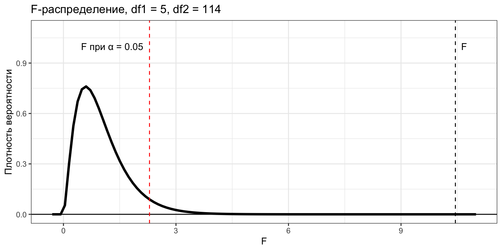
Результаты дисперсионного анализа в виде таблицы
| Источник изменчивости | SS | df | MS | F |
|---|---|---|---|---|
| Название фактора | \(SS_{x}=\sum{n_j(\bar{y}_j-\bar{y})^2}\) | \(df_x = p - 1\) | \(MS_x = \frac{SS_x}{df_x}\) | \(F_{df_x df_e} = \frac{MS_x}{MS_e}\) |
| Случайная | \(SS_{e}= \sum\sum{(\bar{y}_j-y_{ij})^2}\) | \(df_e = n - p\) | \(MS_e = \frac{SS_e}{df_e}\) | |
| Общая | \(SS_{t}= \sum\sum{(\bar{y}-y_{ij})^2}\) | \(df_t = n - 1\) |
Минимальное описание результатов в тексте должно содержать \(F_{df_x, df_e}\) и \(p\).
Делаем дисперсионный анализ в R
В R есть много функций для дисперсионного анализа. Мы рекомендуем Anova() (с большой буквы) из пакета car.
Зачем? Эта функция умеет тестировать влияние факторов в определённом порядке. Когда факторов будет больше одного, это станет важно для результатов.
library(car)
eggs_anova <- Anova(mod_treatment)
eggs_anovaAnova Table (Type II tests)
Response: len
Sum Sq Df F value Pr(>F)
sp 42.8 5 10.4 0.000000029 ***
Residuals 93.4 114
---
Signif. codes: 0 '***' 0.001 '**' 0.01 '*' 0.05 '.' 0.1 ' ' 1Результаты дисперсионного анализа
- Можно описать в тексте:
Длина яиц кукушек в гнёздах разных птиц-хозяев значимо различается (\(F_{5,114} = 10.45\), \(p < 0.01\)).
- Можно представить в виде таблицы:
| Источник изменчивости | Sum Sq | Df | F value | Pr(>F) |
|---|---|---|---|---|
| sp | 42.8 | 5 | 10.4 | 0 |
| Residuals | 93.4 | 114 | NA | NA |
Условия применимости дисперсионного анализа
Результатам тестов можно верить, если выполняются условия применимости
Условия применимости дисперсионного анализа:
- Случайность и независимость наблюдений внутри групп;
- Нормальное распределение остатков;
- Гомогенность дисперсий остатков;
- Отсутствие коллинеарности факторов (независимость групп).
Другие ограничения:
- Лучше работает, если размеры групп примерно одинаковы (т. наз. сбалансированный дисперсионный комплекс);
- Устойчив к отклонениям от нормального распределения (при равных объёмах групп или при больших выборках).
Проверяем выполнение условий применимости
mod_diag <- fortify(mod_treatment)1) График расстояния Кука
ggplot(mod_diag, aes(x = 1:nrow(mod_diag), y = .cooksd)) +
geom_bar(stat = "identity")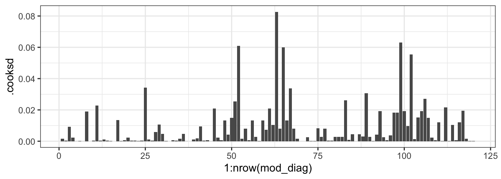
- Выбросов нет
2) График остатков от предсказанных значений
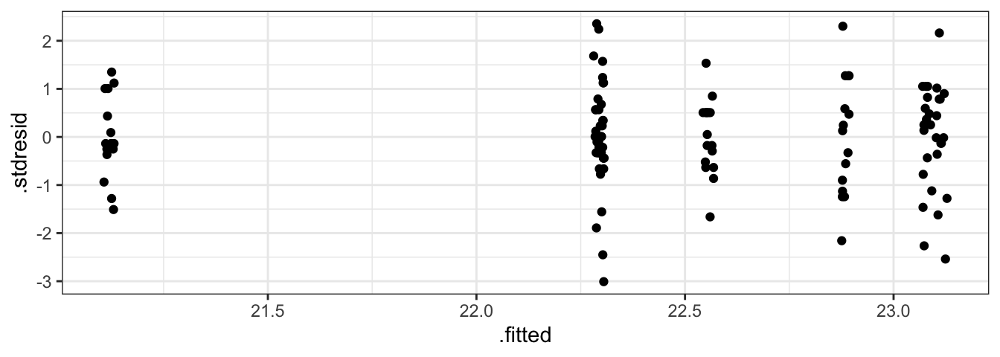
Но у нас один единственный дискретный предиктор, поэтому удобнее сразу боксплот остатков в зависимости от дискретного предиктора.
3) Графики остатков от предикторов в модели и не в модели
ggplot(mod_diag, aes(x = sp, y = .stdresid)) + geom_boxplot()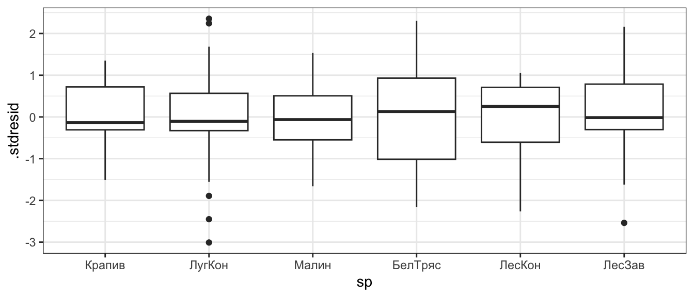
- Дисперсии почти одинаковые. Может быть, в одной из групп чуть больше
4) Квантильный график остатков
library(car)
qqPlot(mod_treatment, id = FALSE)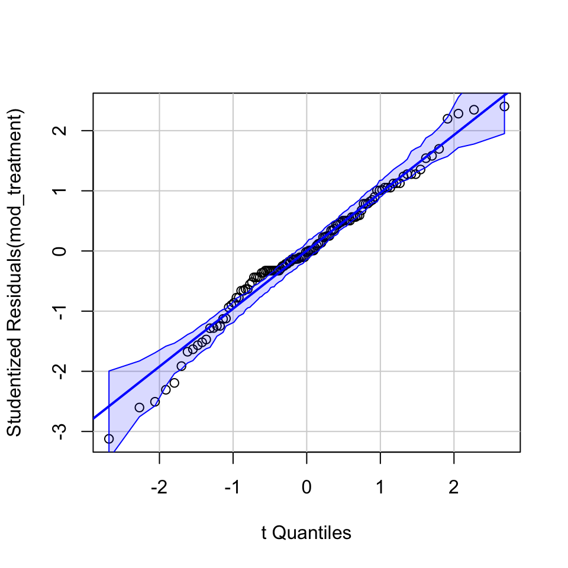
- Распределение остатков немного отличается от нормального
График предсказаний модели
Данные для графика при помощи predict()
MyData <- data.frame(sp = factor(levels(eggs$sp), levels = levels(eggs$sp)))
MyData <- data.frame(
MyData,
predict(mod_treatment, newdata = MyData, interval = "confidence"))
MyData sp fit lwr upr
1 Крапив 21.1 20.7 21.6
2 ЛугКон 22.3 22.0 22.6
3 Малин 22.6 22.1 23.0
4 БелТряс 22.9 22.4 23.3
5 ЛесКон 23.1 22.6 23.5
6 ЛесЗав 23.1 22.6 23.6Задание 2
Создайте MyData вручную:
- предсказанные значения
- стандартные ошибки
- верхнюю и нижнюю границы доверительных интервалов
MyData <- data.frame(sp = factor(levels(eggs$sp),
levels = levels(eggs$sp)))
X <- model.matrix()
betas <-
MyData$fit <- %*%
MyData$se <- sqrt(diag(X %*% vcov(mod_treatment) %*% t(X)))
t_crit <- qt(p = , df = nrow() - length(coef()))
MyData$lwr <- MyData$ - * MyData$
MyData$upr <- MyData$ + * MyData$Решение 2
MyData <- data.frame(sp = factor(levels(eggs$sp),
levels = levels(eggs$sp)))
X <- model.matrix(~sp, data = MyData)
betas <- coef(mod_treatment)
MyData$fit <- X %*% betas
MyData$se <- sqrt(diag(X %*% vcov(mod_treatment) %*% t(X)))
t_crit <- qt(p = 0.975, df = nrow(eggs) - length(coef(mod_treatment)))
MyData$lwr <- MyData$fit - t_crit * MyData$se
MyData$upr <- MyData$fit + t_crit * MyData$se
MyData sp fit se lwr upr
1 Крапив 21.1 0.234 20.7 21.6
2 ЛугКон 22.3 0.135 22.0 22.6
3 Малин 22.6 0.226 22.1 23.0
4 БелТряс 22.9 0.234 22.4 23.3
5 ЛесКон 23.1 0.234 22.6 23.5
6 ЛесЗав 23.1 0.242 22.6 23.6Задание 3
Дополните код, чтобы получить столбчатый график с предсказаниями линейной модели. Заливкой покажите вид птиц-хозяев. Подпишите оси. Спрячьте легенду.
gg_bars <- ggplot(data = , aes(x = , y = )) +
geom_col(aes(), width = 0.5) +
geom_errorbar(aes(ymin = , ymax = ), width = 0.1) +
labs( = "Вид хозяев", = "Длина яиц кукушек, мм") +
scale_fill_brewer(name = "Вид \nхозяев", palette = "Dark2") +
theme( = "none")
gg_barsРешение 3
gg_bars <- ggplot(data = MyData, aes(x = sp, y = fit)) +
geom_col(aes(fill = sp), width = 0.5) +
geom_errorbar(aes(ymin = lwr, ymax = upr), width = 0.1) +
labs(x = "Вид хозяев", y = "Длина яиц кукушек, мм") +
scale_fill_brewer(name = "Вид \nхозяев", palette = "Dark2") +
theme(legend.position = "none")
gg_bars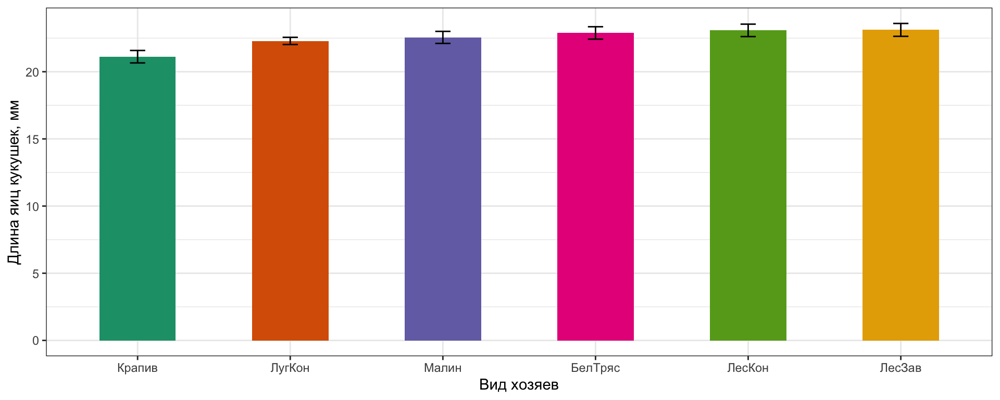
Но какие именно из этих средних значений значимо различаются?
Пост хок тесты
Как понять, какие именно группы различаются
Дисперсионный анализ говорит нам только, есть ли влияние фактора, но не говорит, какие именно группы различаются.
Коэффициенты линейной модели в summary(mod_treatment) содержат лишь часть ответа — сравнение средних значений всех групп со средним на базовом уровне.
Если нас интересуют другие возможные попарные сравнения, нужно сделать пост хок тест.
Есть два способа понять, какие именно группы различаются
Линейные контрасты (linear contrasts)
- Гипотезы о межгрупповых различиях тестируются при помощи комбинаций из коэффициентов линейной модели.
- Набор гипотез (и сравнений) должен быть определён заранее.
- Делать можно вне зависимости от результатов дисперсионного анализа.
Post hoc тесты
- Сравниваются все возможные группы.
- Нет чётких заранее сформулированных гипотез.
- Делать можно, только если влияние соответствующего фактора оказалось значимым.
Типы поправок на множественное сравнение
FWER (Family-wise error rate) — групповая вероятность ошибки первого рода.
Виды: - Поправка Бонферрони (Bonferroni correction) - Поправка Сидака (Šidák’s correction) - Поправка Холма-Бонферрони (Holm-Bonferroni correction)
FDR (False discovery rate) — средняя доля ложных отклонений гипотез (среди всех отклонений).
Виды: - Поправка Бенджамини-Хохберга (Benjamini-Hochberg correction) - Поправка Бенджамини-Екутели (Benjamini-Hochberg-Yekutieli correction)
Разновидности пост хок тестов
Тесты без поправки на число сравнений:
- Наименьшая значимая разница Фишера (Fisher’s Least Significant Difference)
Тесты с поправкой для уровня значимости \(\alpha\):
- Поправка Бонферрони (Bonferroni correction)
- Поправка Сидака (Šidák’s correction)
Тесты, основанные на распределении стьюдентизированного размаха:
- Тест Тьюки (Tukey’s Honest Significant Difference, HSD)
- Тест Стьюдента-Ньюмена-Кьюлса (Student-Newman-Kewls test, SNK)
- Тест Даннета (Dunnet’s test) — используется для сравнения с контрольной группой.
Тесты, основанные на F-тестах:
- Критерий Дункана (Dunkan’s test)
- Тест Шеффе (Scheffe’s test)
Наименьшая значимая разница Фишера
Используется t-критерий с \(df = df_e = n - p\):
\[t = \frac{\bar{y}_i - \bar{y}_j}{\sqrt{MS_e \left(\frac{1}{n_i} + \frac{1}{n_j}\right)}}\]
- Подразумевается равенство дисперсий в сравниваемых группах
- Не вносится поправка для уровня значимости, учитывающая множественность сравнений. Не подходит для большого количества групп сравнений.
Три выборки
Представьте, что мы берём из одной и той же генеральной совокупности три выборки.
Средние значения \(\bar y_1\), \(\bar y_2\) и \(\bar y_3\) в каждой из этих выборок скорее всего окажутся разными и не будут похожи на генеральное среднее \(\mu\).
- Возьмём \(m\) выборок из одной генеральной совокупности
- Отсортируем выборочные средние: \(\bar y_{1} \ge \bar y_2 \ge \ldots \ge \bar y_{m}\)
- Вычислим разницу максимального и минимального средних \(\bar y_{max} - \bar y_{min}\)
Если повторить 1–3 много раз, то получится распределение, которое показывает, чему может быть равна разница средних значений в выборках из одной генеральной совокупности.
Распределение стьюдентизированного размаха
Это распределение стандартизованной разницы минимального и максимального средних для любого числа выборок из одной генеральной совокупности (форма зависит от \(df\) и от числа выборок \(m\)).
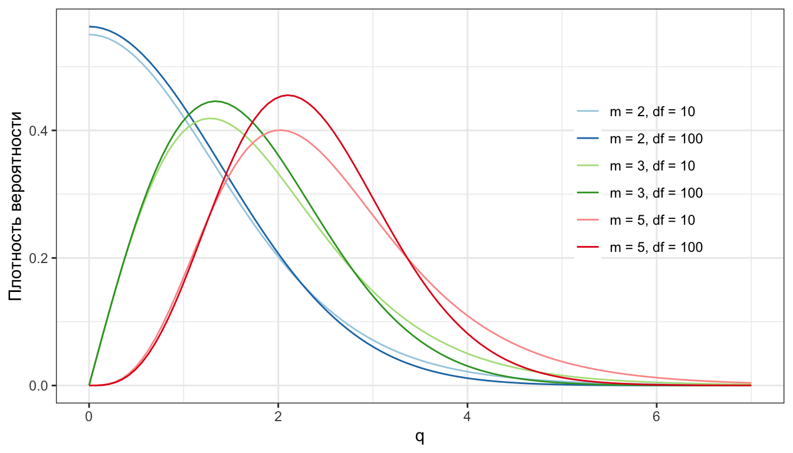
Формула для случая равных дисперсий и разных объёмов групп:
\[q = \frac{\bar{y}_{max} - \bar{y}_{min}}{\sqrt{MS_{e}\frac{1}{2} \left(\frac{1}{n_i} + \frac{1}{n_j}\right)}}\]
Стьюдентизированный t-критерий консервативнее обычного
Обычный t-критерий
\[t = \frac{\bar{y}_i - \bar{y}_j}{\sqrt{MS_e \left(\frac{1}{n_i} + \frac{1}{n_j}\right)}}\]
Стьюдентизированный t-критерий
\[q = \frac{\bar{y}_i - \bar{y}_j}{\sqrt{MS_e \;\frac{1}{2} \; \left(\frac{1}{n_i} + \frac{1}{n_j}\right)}}\]
При этом \(\bar{y}_i > \bar{y}_j\), т.е. вычитается из большего меньшее среднее.
Значение \(q\) будет в 1.414 раз больше, чем \(t\).
\[q = \frac{t}{\sqrt{\; \frac{1}{2}}} = \sqrt{2} \cdot t = 1.414 \cdot t\]
Тест Тьюки (Tukey’s Honest Significant Difference)
Используется стьюдентизированный t-критерий с \(df = df_e = n - p\) и \(m = p\) (общее число групп):
\[q = \frac{\bar{y}_i - \bar{y}_j}{\sqrt{MS_e\frac{1}{2} \left(\frac{1}{n_i} + \frac{1}{n_j}\right)}}\]
Требуется равенство дисперсий.
Тест Даннета (Dunnett’s test)
Используется, когда хотим сравнить контрольную группу с экспериментальными. Лучше подходит для тех случаев, когда мы не хотим сравнить все группы со всеми, а нам нужны только определённые. Основан также на стьюдентизированном t-критерии.
q-статистика считается так же, как в случае теста Тьюки; по-другому рассчитывается критическое значение q, с которым сравниваем наблюдаемое.
Пост хок тесты различаются по степени консервативности
Если посмотреть на критические значения t при сравнении средних при \(\alpha = 0.05\) (\(m = 4\) группы по 6 наблюдений, \(df_e = 20\)), становится понятно, что тест Тьюки — разумный компромисс среди пост хок тестов.
| Тест | Критическое значение |
|---|---|
| Шеффеa | 3.05 |
| Бонферрони (4 группы) | 2.93 |
| Тьюки (HSD)b | 2.80 |
| Бонферрони (3 группы) | 2.63 |
| Даннетb | 2.54 |
| Дунканa, b | 2.22 |
| Фишер (LSD) | 2.09 |
a — Значение \(t\), соответствующее \(F\).
b — Для сопоставимости внесена поправка \(\sqrt{2}\).
Пост хок тест Тьюки в R
glht()— «general linear hypotheses testing»linfct— аргумент, задающий гипотезу для тестированияmcp()— функция, чтобы задавать множественные сравнения (обычные пост хоки)sp = "Tukey"— тест Тьюки по факторуsp
library(multcomp)
eggs_posthoc <- glht(mod_treatment, linfct = mcp(sp = "Tukey"))Результаты попарных сравнений (тест Тьюки)
Таблица результатов пост хок теста практически нечитабельна.
summary(eggs_posthoc)
Simultaneous Tests for General Linear Hypotheses
Multiple Comparisons of Means: Tukey Contrasts
Fit: lm(formula = len ~ sp, data = eggs)
Linear Hypotheses:
Estimate Std. Error t value Pr(>|t|)
ЛугКон - Крапив == 0 1.1733 0.2699 4.35 <0.001 ***
Малин - Крапив == 0 1.4362 0.3253 4.41 <0.001 ***
БелТряс - Крапив == 0 1.7667 0.3305 5.34 <0.001 ***
ЛесКон - Крапив == 0 1.9600 0.3305 5.93 <0.001 ***
ЛесЗав - Крапив == 0 1.9943 0.3364 5.93 <0.001 ***
Малин - ЛугКон == 0 0.2629 0.2635 1.00 0.915
БелТряс - ЛугКон == 0 0.5933 0.2699 2.20 0.241
ЛесКон - ЛугКон == 0 0.7867 0.2699 2.91 0.047 *
ЛесЗав - ЛугКон == 0 0.8210 0.2770 2.96 0.041 *
БелТряс - Малин == 0 0.3304 0.3253 1.02 0.909
ЛесКон - Малин == 0 0.5238 0.3253 1.61 0.587
ЛесЗав - Малин == 0 0.5580 0.3313 1.68 0.538
ЛесКон - БелТряс == 0 0.1933 0.3305 0.58 0.992
ЛесЗав - БелТряс == 0 0.2276 0.3364 0.68 0.984
ЛесЗав - ЛесКон == 0 0.0343 0.3364 0.10 1.000
---
Signif. codes: 0 '***' 0.001 '**' 0.01 '*' 0.05 '.' 0.1 ' ' 1
(Adjusted p values reported -- single-step method)Результаты пост хок теста
Результаты пост хок теста можно привести в виде текста…
- Размер яиц кукушек в гнёздах крапивника значимо меньше, чем в гнёздах лугового конька (тест Тьюки, \(p < 0.01\)). Размер яиц кукушек в гнёздах лесной завирушки, белой трясогузки, малиновки и лесного конька не различается, но яйца кукушек в гнёздах этих хозяев крупнее, чем в гнёздах у лугового конька или крапивника (тест Тьюки, от \(p < 0.01\) до \(0.05\)).
…или построить график
Можно привести результаты пост хок теста на столбчатом графике
Значимо различающиеся группы обозначим разными буквами
gg_bars_coded <- gg_bars +
geom_text(aes(y = 30, label = c("A", "B", "BC", "BC", "C", "C")),
colour = "black", size = 5)
gg_bars_coded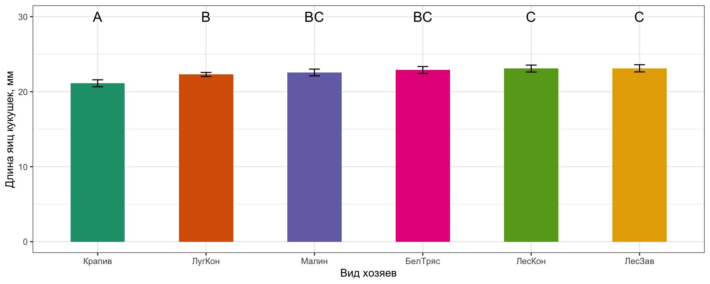
Take home messages
- Дисперсионный анализ — линейная модель с дискретными предикторами, существует в нескольких параметризациях, которые отличаются трактовками коэффициентов.
- При помощи дисперсионного анализа можно проверить гипотезу о равенстве средних значений в группах.
- Условия применимости дисперсионного анализа:
- Случайность и независимость групп и наблюдений внутри групп
- Нормальное распределение в группах
- Гомогенность дисперсий в группах
- При множественных попарных сравнениях увеличивается вероятность ошибки первого рода, поэтому нужно вносить поправку для уровня значимости
- Post hoc тесты — это попарные сравнения после дисперсионного анализа, которые позволяют сказать, какие именно средние различаются
Дополнительные ресурсы
- Quinn, Keough, 2002, pp. 173–207
- Logan, 2010, pp. 254–282
- Open Intro to Statistics, pp. 236–246
- Sokal, Rohlf, 1995, pp. 179–260
- Zar, 2010, pp. 189–207 ```